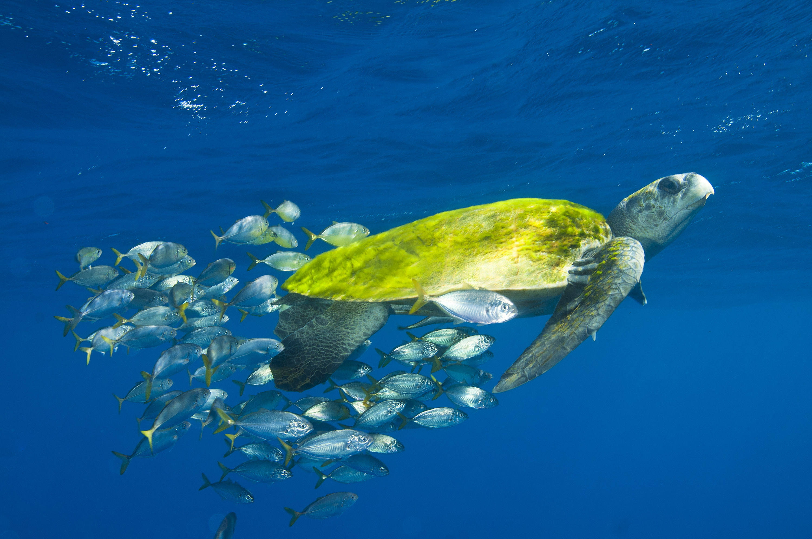
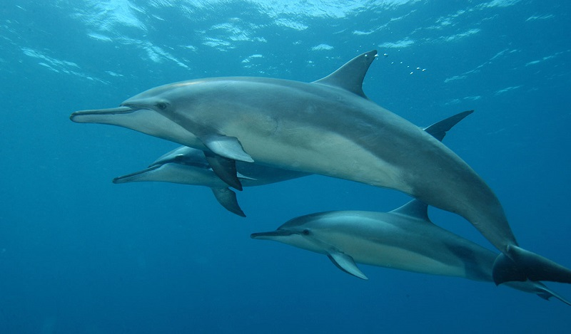
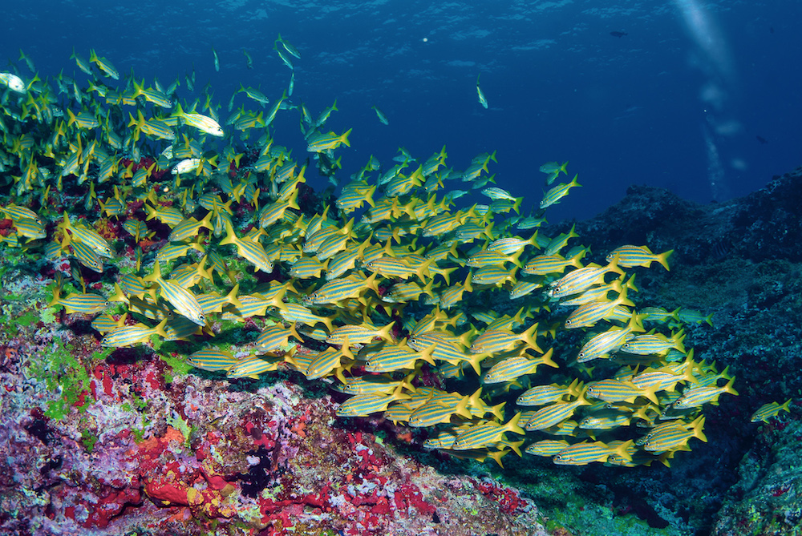
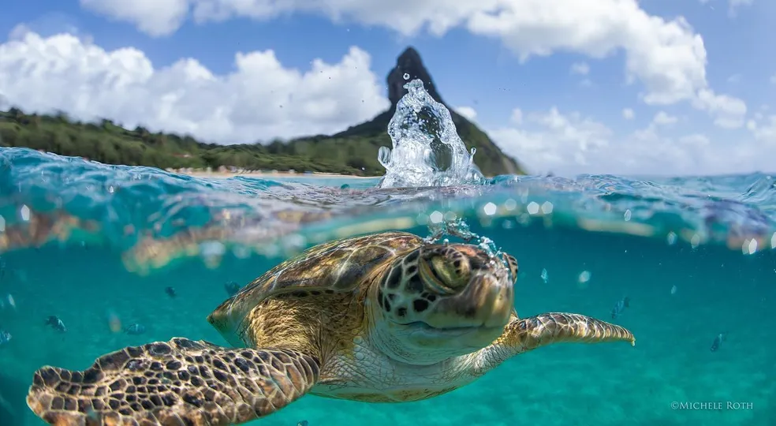
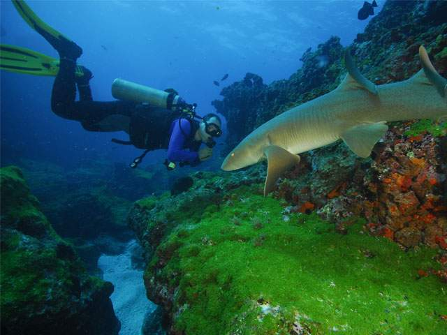
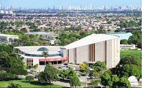
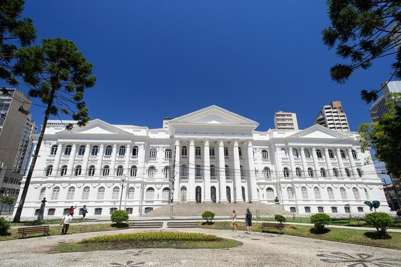
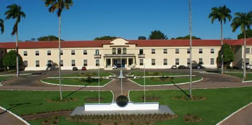
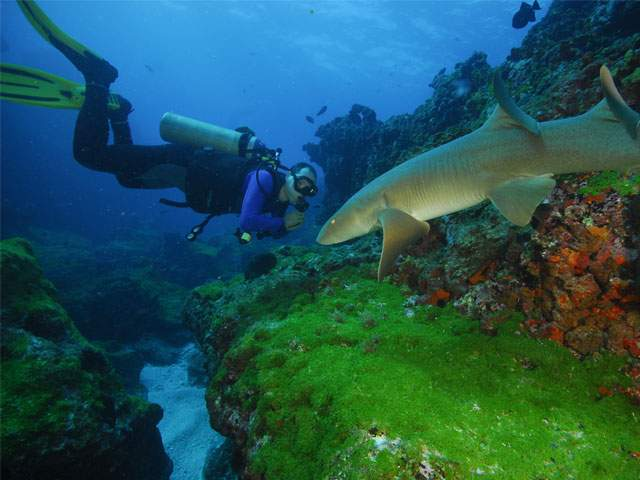
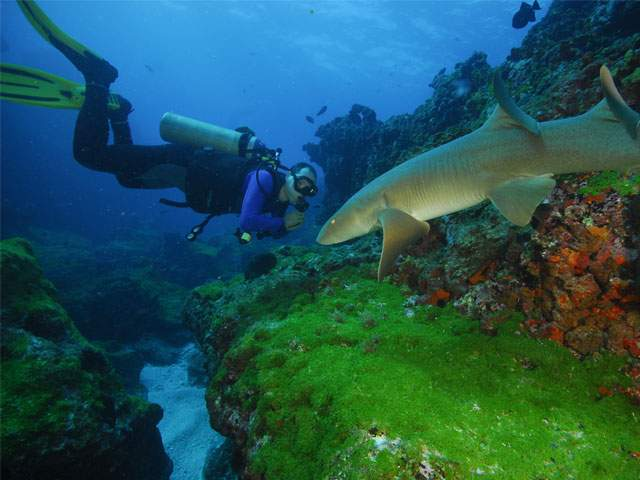

Nossa história começa lá em 2012, em uma palestra realizada em São Paulo, 5 jovens récem formados na
área de biologia e turismo sentiram algo em comum nas suas faculdades: a falta da relação entre
estudo e convívio com a natureza...
Neste processo que levou mais de 4 anos, juntando investimento, vontade e paixão pelo que fazemos, foi
fundada em 2016 a Horizonte Dourado Resort.

Somos uma empresa com amplo conhecimento na área de
turismo,
atuando nas ilhas de Fernando de Noronha, Boipeba e Ilha do Mel. Com o nosso principal foco: a
preservação e a beleza que a natureza nos proporciona, e nada mais contemplar as belezas que
o nosso país nos proporciona.
Queremos impressionar aos turistas como nosso resort concilia o turismo nas ilhas com a ecologia, mostrando
toda a beleza e a importância de preservar elas, com excursões e momentos únicos com a natureza,


Missão, visão e valores
Missão: Oferecer experiências para ambientes inesquecíveis; crescimento da empresa de mãos
dadas
com a sustentabilidade e transmitir a conscientização sobre a preservação ambiental.

Visão:Queremos ser referência como o maior resort ecológico do Brasil; expandindo novos
resorts; transmitir a nossa ideologia para outras empresas.
Valores: Responsabilidade ambiental e social; inovação; aprendizado contínuo
Contamos com parcerias de faculdades com cursos voltados a essa área, escolas e de projetos ambientais,
incentivando e
mostrando que na nossa empresa o estudo e trabalho duro compensa!

Entre as faculdades parceiras temos as Universdades Federais de Pernambuco, Paraná entre muitas
outras.
Cursos relacionados a faculdade como biologia ou da área de ciências, história e até mesmo geografia.



Afinal, qual o nosso diferencial?
Estar em convívio direto com a natureza nos faz refletir sobre
como manter essa beleza natural, pensando nisso, os nossos resorts estão habituados a práticas
sustentáveis...
Tais práticas que adotamos como o instalações de painéis solares para o uso de energia
renovável, reciclagem
de produtos, trabalho com produtos orgânicos para uma alimentação muito mais saudável e
saborosa, dias da
semana voltada para refeições vegetarianas e veganas, além do uso de materias reciclados nas
quais o resort
e funcionários estão equiparados.
Novidades para você estudante!
Entre os meses de Julho e Dezembro onde ocorre as férias de muitos dos estudantes, nós
daHorizonte Dourado
Resort, iremos selecionar os 5 melhores alunos da universidade para que eles possam se hospedar
nos nossos
resorts de forma totalmente gratuita!!!
Álem da hospedagem gratuita, isenção dos pagamentos para excursões e atividades dentro do
resort, ficando as
custas do aluno apenas os pagamentos fora do resort, sabemos como o estudo e trabalho duro
compensa, o
selecionado terá direito a uma hospedagem de
até 20 dias!!!
20 dias de lazer total, passagens de ida e volta totalmente pagas e o mais puro luxo do nosso
resort!
Caso estiver interessado para saber quais os requisitos para selecionarmos você estudante, clique no saiba mais.


 
